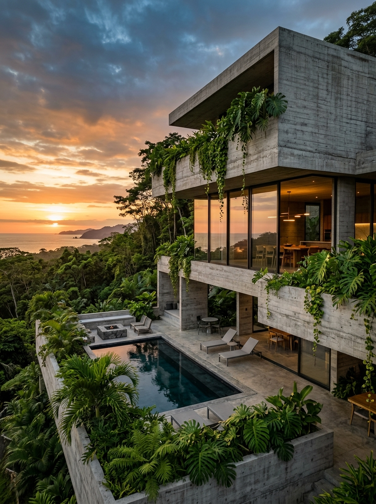
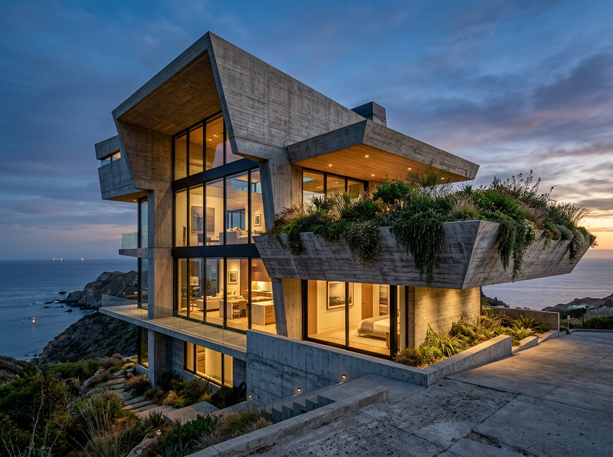
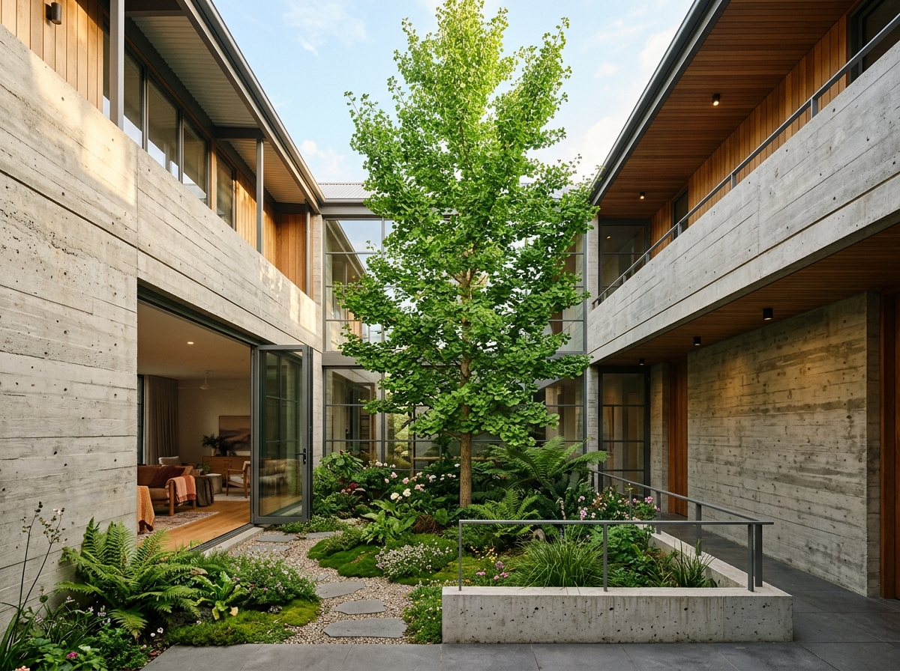
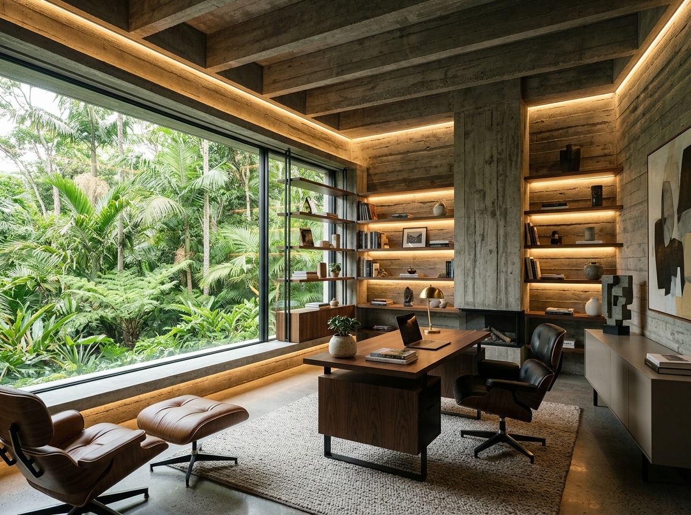

I am an Architectural Designer passionate about blending minimalist brutalist forms with lush greenery and functional space planning.
With hands-on experience in exterior concept development, facade detailing, and on-site supervision, I specialize in translating design ideas into photorealistic 3D visuals and buildable working drawings. Proficient in AutoCAD, SketchUp, Lumion, and D5 Render, with practical exposure to material selection, client communication, and resolving structural details on site.
Concept-led elevations, facade detailing and massing with a brutalist minimalist language.
Landscape-integrated designs, terraces and courtyards that keep nature part of the building.
Space planning and interior design development aligned with client needs and budget.
Photorealistic renders and presentations using SketchUp, Lumion and D5 Render.

Cantilevered concrete volumes with terrace planting and deep-set glazing.

A landscape-first plan wrapping living spaces around a central garden.

Material-led interiors balancing raw finishes, warm light and greenery.
Understanding the site, client needs and budget to shape the idea.
Planning, facade detailing and 3D modelling with consultants.
Working drawings, site supervision and coordination until built.
KEDS International College
Open to architectural design, facade & landscape concepts, and 3D visualization work.